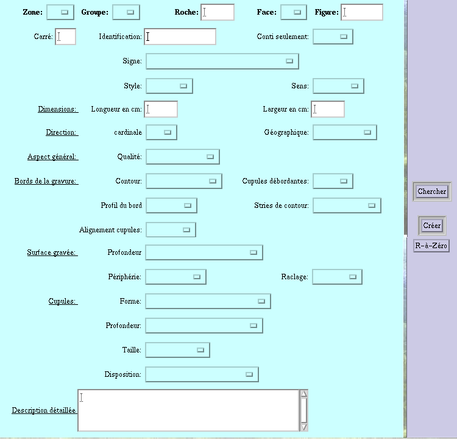

VI- LES ECRANS
5- L'écran Figures protohistoriques
5- L'écran Figures protohistoriques
Cet écran permet de saisir toutes les informations relatives aux figures protohistoriques.
CHAMPS
OBLIGATOIRES:
Les seuls champs obligatoires pour la saisie sont
les champ Zone, Groupe, Roche, Face et Figure qui constituent la clef
primaire
de la table Figure.
